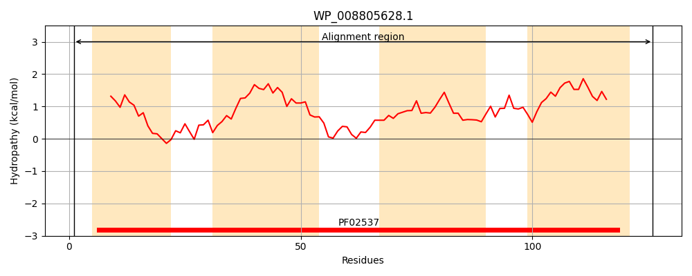
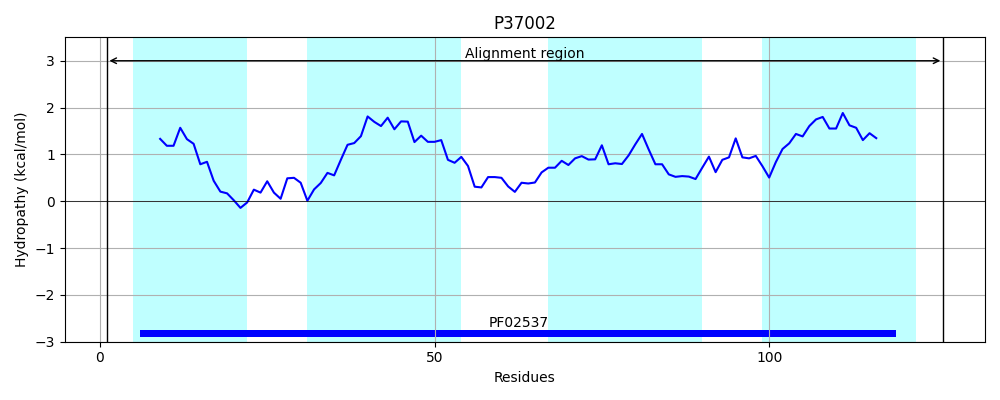
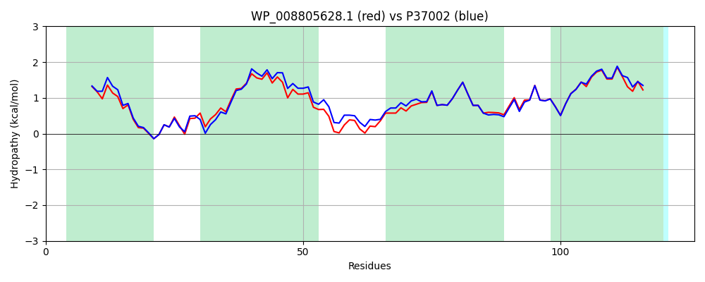

Hit Accession: P37002
Hit TCID: 1.A.43.1.1
Hit Description: gnl|BL_ORD_ID|10074 gnl|TC-DB|P37002|1.A.43.1.1 Protein crcB - Escherichia coli.
Mach Len: 126
e:0.000000
Query TMS Count : 4
Hit TMS Count: 4
TMS-Overlap Score: 4.450000
Predicted Substrates:CHEBI:5113;fluoride, CHEBI:3731;chloride
BLAST Alignment:
Score: 536 , Bit scores: 211 bits, E-value: 3.6e-72, Alignment length: 126, Percentage identity: 78
Query: 1 MFQLLCAVFIGGGTGSVLRWWLGMKLNPVHHAIPIGTLTANLVGAFVIGAGLAWFNRLTDIDPMWKLLITTGFCGGLTTFSTFSAEVVFLLQQGRVSWALLNVMVNLLGSFAMTAVAFWLFSQAAS 126
M QLL AVFIGGGTGSV RW L M+ NP+H AIP+GTLTANL+GAF+IG G AWF+R+T+IDP+WK+LITTGFCGGLTTFSTFSAEVVFLLQ+GR WALLNV VNLLGSFAMTA+AFWLFS + +
Sbjct: 1 MLQLLLAVFIGGGTGSVARWLLSMRFNPLHQAIPLGTLTANLIGAFIIGIGFAWFSRMTNIDPVWKVLITTGFCGGLTTFSTFSAEVVFLLQEGRFGWALLNVFVNLLGSFAMTALAFWLFSASTA 126 | Protein Hydropathy Plots: |
|---|
|  |  |
Pairwise Alignment-Hydropathy Plot:
|
|---|
|  |